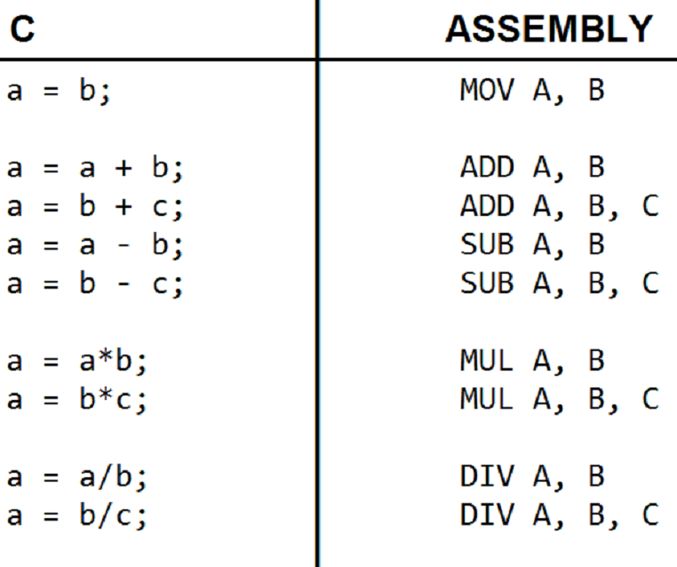
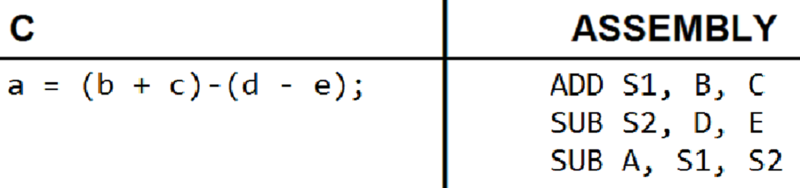

A linguagem Assembly tem suas origens ainda nos computadores de válvulas, na década de 1950, e é considerada umas das linguagens de programação pioneiras, e uma das poucas delas ainda ativas.
O Assembly é uma linguagem de Baixo nível, porém, inteligível para programadores e humanos em geral. Sua principal intenção é reduzir os comandos a frações simples, pequenas instruções para a máquina.
Todas as instruções são resumidas em instruções computacionais. A estrutura sintática é a mesma, a única mudanca é a utilização dos chamados Opcodes Mnemônicos, pois permitem interpretação pelo programador, como ADD, SUB, MUL e DIV, as 4 operações básicas da matemática escolar.
A programação Assembly permitiu a programação por código, não pelo Binário da máquina, e hoje incomum, mas ainda é aprendido e usado (mesmo que envolva muito esforço), devido à sua semelhança com a Linguagem de Máquina.
Exemplos de Operações em Assembly:

Exemplo de Expressão Matemática em Assembly:
